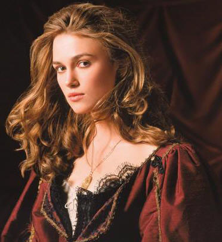
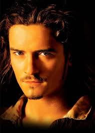
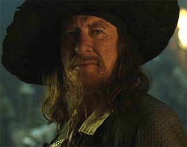
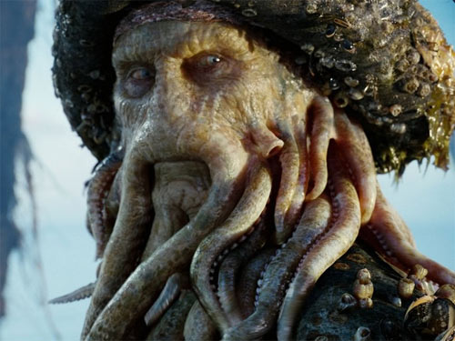
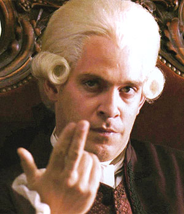
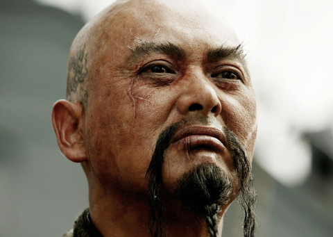
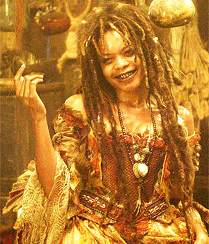

Johnny Depp as Captain Jack Sparrow: Sparr ow and the Black Pearl have been dragged to Davy Jones' Locker by the Kraken and is trapped there until his former crew mounts a rescue party.
Keira Knightley as Elizabeth Swann: Governor Swann’s daughter and Will Turner's fiancée. Having tricked Jack Sparrow into being swallowed by the Kraken to save herself and the Black Pearl crew, she subsequently goes to hi s rescue.
Orlando Bloom as William "Will" Turner Jr.: A blacksmith turned pirate, the son of "Bootstrap Bill" Turner and the husband of Elizabeth Swann.
Geoffrey Rush as Captain Hector Barbossa: Once first mate of the Black Pearl under Jack's command before leading a mutiny, Barbossa has been resurrected by Tia Dalma to captain the rescue of Jack Sparrow. He was also needed for his "piece of eight" to free Calypso. Rush said that in the film, Barbossa becomes more of a cunning politician. [3] Depp said he was pleased he got more screentime with Rush than in the first film"We're like a couple of old ladies fighting over their knitting needles". [4]
Bill Nighy as Davy Jones: Ghostly ruler of the ocean realm, captain of The Flying Dutchman . With his heart captured by James Norrington, he is now enslaved to Cutler Beckett who commanded him to kill the Kraken, and now serves the East India Trading Company.
Tom Hollander as Cutler Beckett: Chairman of the East India Trading Co. and now in possession of Davy Jones' heart, Beckett attempts to control the world's oceans for the sake of business - and with it, the end of piracy.
Chow Yun - fat as Sao Feng: Pirate Lord of the South China Sea, he captains the Chinese ship The Empress and has a history with Sparrow. He is reluctant to aid in his rescue from Davy Jones' Locker. "Sao Feng" ( 嘯風 ) means "Howling Wind" in Chinese. Chow was confirmed to be p laying Feng in July 2005 while production of the second film was on hiatus. [5] Chow relished playing the role, even helping out crew members with props. [6]
Naomie Harris as Tia Dalma/Calypso: An obeah witch who travels with the Black Pearl crew to rescue Jack, she also raised Hector Barbossa from the dead at the conclusion of Dead Man's Chest and has a mysterious past connection to Davy Jones.